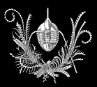
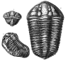
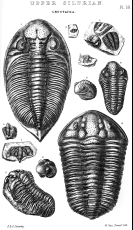

FAQs Articles
Trilobites dans la Silurienne de Murchison
Itinéraire Legacy : /faqs/trilobite/siluria.html · Source : faqs/trilobite/siluria.html
Trilobites dans le Siluria de Murchison

Sir Roderick Impey Murchison a publié une œuvre complète sur le Système silurien en Grande-Bretagne et ailleurs en 1838. Initialement composée de roches correspondant approximativement à l'intervalle actuellement connu sous le nom de Silurien, la définition de Silurien de Murchison s'est plus tard étendue pour englober une grande partie des roches paléozoïques pré-sandstone rouge ancien (c'est-à-dire pré-dévoniennes) en Grande-Bretagne, y compris des intervalles actuellement considérés comme étant du Cambrien et de l'Ordovicien. Son livre, Siluria, décrit la géologie et le contenu fossile d'une grande partie du Paléozoïque, et fournit d'excellentes illustrations d'une grande partie de la flore et de la faune. Ce document fournit un échantillon d'illustrations de trilobites de la quatrième édition, publiée en 1867 :
Murchison, Sir Roderick Impey, 1867. Siluria. Quatrième édition. Histoire des plus anciennes roches des îles britanniques et d'autres pays ; Avec des esquisses de l'origine et de la distribution de l'or natif, de la succession générale des formations géologiques et des changements de la surface de la Terre. John Murray : Londres, p.1-566, pl.1-41.
Ces illustrations sont anatomiquement assez précises et sont tout à fait artistiques. Le droit d'auteur est également expiré, donc n'hésitez pas à les utiliser comme vous le souhaitez.

Calymene blumenbachii Brongiart et C. tuberculosa Salter (128Ko)
À partir des planches 17 et 18. La figure 11 est l'exemple de C. tuberculosa.

Planche 18, fossiles du « Silurien supérieur » (232Ko)
Cette période correspond approximativement à la définition actuelle du Silurien moyen et supérieur (post-Llandovery).
- Fig.1. Phacops caudatus Brogn. W.L. Shropshire et Dudley.
[Ceci est maintenant attribué à Dalmanites.]
- Fig.2,5 Phacops downingiae Murch. W.L. Dudley. [Ceci est
maintenant attribué à Acaste.]
- Fig.3,4 queues d'exemplaires jeunes. De Ludlow Rock, Pembrokeshire.
- Fig.7,8 Acidaspis brightii Murch. W.L. Malverns et Dudley.
- Fig.9 Encrinurus variolaris Brogn. W.L. Dudley.
- Fig.10 Calymene blumenbauchii Brogn. W.L. Dudley.
- Fig.11 Calymene tuberculosa Salter W.Sh. Burrington, Shropshire.
Andrew MacRae
macrae@geo.ucalgary.ca
{kind=link}
{kind=link}
{kind=link}